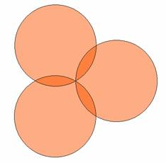
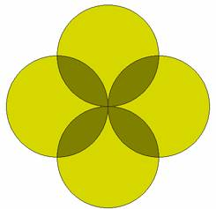
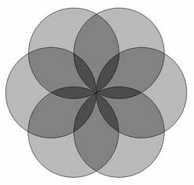
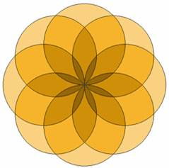
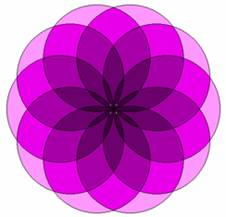
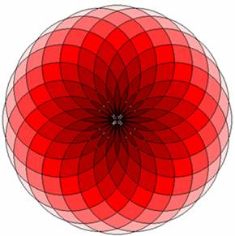

A beautiful mind looks for beauty in everything. Determinant is a mathematician who finds many beautiful flowers in intersecting circles. You can see his flowers below. The layers are marked with different colors. You can assume that the topmost flower is the smallest and darkest. The bottom layer(s) is(are) covered by the top layer(s). You can assume that
|  |  |  |
| Three circles intersect | Four circles intersect | Six circles intersect |
|  |  | |
| Eight circles intersect | Ten circles intersect | Fifteen circles intersect |
|  | ||
| Fifteen circles intersect | ||
Given the radius (R) and number (N) of intersecting circles, you will have to find the total area of each layer (Li), the total visible area of each layer (Vi). Total Area of each layer means the summation of the surface area of all the petals in that layer. For example, the petals of the bottom most layer are always circles. So the total area of the bottom most layer is always N*(area of one circle).
Input
The input file contains less than 1200 lines of input. Each line contains two positive integers R (50 >= R > 0) and N (100 >= N >= 3) as described in the problem statement. Input is terminated by a line where R=0 and N=0.
Output
For each line of input, produce (L+2) lines of output, where L is the number of layers in that flower.
The first line of the output for each layer is the output serial number as shown in the sample output. The very next line contains an integer L where L is the number of layers in the flower. Each of the next L lines should contain two floating-point numbers. The first floating point number in the i-th line denotes the total area of the i-th layer (From top to bottom) and the second floating point number denotes the visible area of the i-th layer. All floating-point numbers should be rounded up to four digits after the decimal point. Errors less than 10-4 will be ignored.
| Sample Input | Sample Output |
10 3 10 5 10 7 0 0 |
Set 1: 2 54.3516 54.3516 942.4778 833.7745 Set 2: 3 20.2666 20.2666 466.9495 426.4163 1570.7963 657.1639 Set 3: 4 10.4406 10.4406 260.0283 239.1470 1023.5143 513.8984 2199.1149 412.1145 |